Resource Selection Functions - NRES 746
S. Hromada, A. Parandhaman, A. Xiong
11/25/2018
For those wishing to follow along with the R-based demo in class, click here for the companion R script for this lecture.
Follow along with our powerpoint presentation here
Logistic Regression
adapted from https://stats.idre.ucla.edu/r/dae/logit-regression/
mydata <- read.csv("https://stats.idre.ucla.edu/stat/data/binary.csv")
## view the first few rows of the data
head(mydata)## admit gre gpa rank
## 1 0 380 3.61 3
## 2 1 660 3.67 3
## 3 1 800 4.00 1
## 4 1 640 3.19 4
## 5 0 520 2.93 4
## 6 1 760 3.00 2mydata$rank <- factor(mydata$rank)
mylogit <- glm(admit ~ gre + gpa + rank, data = mydata, family = "binomial")
summary(mylogit)##
## Call:
## glm(formula = admit ~ gre + gpa + rank, family = "binomial",
## data = mydata)
##
## Deviance Residuals:
## Min 1Q Median 3Q Max
## -1.6268 -0.8662 -0.6388 1.1490 2.0790
##
## Coefficients:
## Estimate Std. Error z value Pr(>|z|)
## (Intercept) -3.989979 1.139951 -3.500 0.000465 ***
## gre 0.002264 0.001094 2.070 0.038465 *
## gpa 0.804038 0.331819 2.423 0.015388 *
## rank2 -0.675443 0.316490 -2.134 0.032829 *
## rank3 -1.340204 0.345306 -3.881 0.000104 ***
## rank4 -1.551464 0.417832 -3.713 0.000205 ***
## ---
## Signif. codes: 0 '***' 0.001 '**' 0.01 '*' 0.05 '.' 0.1 ' ' 1
##
## (Dispersion parameter for binomial family taken to be 1)
##
## Null deviance: 499.98 on 399 degrees of freedom
## Residual deviance: 458.52 on 394 degrees of freedom
## AIC: 470.52
##
## Number of Fisher Scoring iterations: 4For every unit increase of gre/gpa, log odds of admission increase by 0.002/0.8 “Rank” variables show relative log odds of admission
We can use a Wald test to determine if “rank” is significant, with the chisquared portion
aod::wald.test(b = coef(mylogit), Sigma = vcov(mylogit), Terms = 4:6)## $Sigma
## (Intercept) gre gpa rank2
## (Intercept) 1.299488136 -3.012230e-04 -0.3036601226 -8.447562e-02
## gre -0.000301223 1.196831e-06 -0.0001241775 -1.685461e-06
## gpa -0.303660123 -1.241775e-04 0.1101040465 4.520512e-03
## rank2 -0.084475619 -1.685461e-06 0.0045205124 1.001657e-01
## rank3 -0.048643548 1.860520e-05 -0.0094686488 6.956636e-02
## rank4 -0.089431344 1.183599e-05 0.0035682837 7.012724e-02
## rank3 rank4
## (Intercept) -0.0486435476 -8.943134e-02
## gre 0.0000186052 1.183599e-05
## gpa -0.0094686488 3.568284e-03
## rank2 0.0695663608 7.012724e-02
## rank3 0.1192365224 6.974161e-02
## rank4 0.0697416110 1.745833e-01
##
## $b
## (Intercept) gre gpa rank2 rank3
## -3.989979073 0.002264426 0.804037549 -0.675442928 -1.340203916
## rank4
## -1.551463677
##
## $Terms
## [1] 4 5 6
##
## $H0
## [1] 0 0 0
##
## $L
## (Intercept) gre gpa rank2 rank3 rank4
## L1 0 0 0 1 0 0
## L2 0 0 0 0 1 0
## L3 0 0 0 0 0 1
##
## $result
## $result$chi2
## chi2 df P
## 2.089532e+01 3.000000e+00 1.106793e-04
##
##
## $verbose
## [1] FALSE
##
## $df
## NULL
##
## attr(,"class")
## [1] "wald.test"Then we can turn them into odds-ratio (more interpretable)
exp(cbind(OR = coef(mylogit), confint(mylogit)))## Waiting for profiling to be done...## OR 2.5 % 97.5 %
## (Intercept) 0.0185001 0.001889165 0.1665354
## gre 1.0022670 1.000137602 1.0044457
## gpa 2.2345448 1.173858216 4.3238349
## rank2 0.5089310 0.272289674 0.9448343
## rank3 0.2617923 0.131641717 0.5115181
## rank4 0.2119375 0.090715546 0.4706961Then we can also perform a goodness of fit test, tests whether is a better fit than null model by deviance of both
with(mylogit, null.deviance - deviance) #test statistic ## [1] 41.45903with(mylogit, df.null - df.residual) #degrees of freedom## [1] 5with(mylogit, pchisq(null.deviance - deviance, df.null - df.residual, lower.tail = FALSE)) #p-value## [1] 7.578194e-08logLik(mylogit)## 'log Lik.' -229.2587 (df=6)Resource Selection
Goats
Picture of mtn Goats here
Dataset (provided in ResourceSelection package) collected on Mountain goats in Coast Mtns, BC (Lele & Keim, 2006)
library(ResourceSelection)## ResourceSelection 0.3-2 2017-02-28data(goats)
head(goats)## STATUS ID ELEVATION SLOPE ET ASPECT HLI TASP
## 1 1 1 651 38.5216 35.3553 243.1131 0.9175926 0.9468804
## 2 1 1 660 39.6927 70.7107 270.0000 0.8840338 0.6986293
## 3 1 1 316 20.5477 50.0000 279.2110 0.7131423 0.5749115
## 4 1 1 334 34.0783 35.3553 266.1859 0.8643775 0.7447368
## 5 1 1 454 41.6187 25.0000 258.3106 0.9349181 0.8292587
## 6 1 1 343 28.4694 103.0776 237.0426 0.8254866 0.975611219014 locations of 10 goats
Collected Variables: STATUS a numeric vector, 1: used, 0: available ID a numeric vector, individuals ELEVATION a numeric vector (m) SLOPE a numeric vector (degrees, steep) ET a numeric vector, access to escape terrain (distance from steep slopes, m) ASPECT a numeric vector (degrees) HLI a numeric vector, heat load index (0-1) TASP a numeric vector, transformed aspect
some data processing:
goats$exp.HLI <- exp(goats$HLI)
goats$sin.SLOPE <- sin(pi * goats$SLOPE / 180)
goats$ELEVATION <- scale(goats$ELEVATION)
goats$ET <- scale(goats$ET)
goats$TASP <- scale(goats$TASP)
head(goats)## STATUS ID ELEVATION SLOPE ET ASPECT HLI TASP
## 1 1 1 -0.9150137 38.5216 -0.6183467 243.1131 0.9175926 0.9803218
## 2 1 1 -0.8914406 39.6927 -0.3792833 270.0000 0.8840338 0.5836063
## 3 1 1 -1.7924533 20.5477 -0.5193233 279.2110 0.7131423 0.3858999
## 4 1 1 -1.7453073 34.0783 -0.6183467 266.1859 0.8643775 0.6572880
## 5 1 1 -1.4310005 41.6187 -0.6883664 258.3106 0.9349181 0.7923575
## 6 1 1 -1.7217343 28.4694 -0.1604274 237.0426 0.8254866 1.0262349
## exp.HLI sin.SLOPE
## 1 2.503257 0.6228096
## 2 2.420644 0.6386698
## 3 2.040393 0.3509871
## 4 2.373528 0.5603253
## 5 2.547005 0.6641702
## 6 2.282991 0.4766893Now we fit the models. “m” describes the matching of use and available points, “0” will give us an unmatched design while other values will allow us to relate certain points. “B” is the number of bootstrap iterations
m1 <- rspf(STATUS ~ TASP + sin.SLOPE + ELEVATION, goats, m=0, B = 99)## Loading required namespace: pbapplym2 <- rspf(STATUS ~ TASP + ELEVATION, goats, m=0, B = 99)
summary(m1)##
## Call:
## rspf(formula = STATUS ~ TASP + sin.SLOPE + ELEVATION, data = goats,
## m = 0, B = 99)
##
## Resource Selection Probability Function (Logistic RSPF) model
## Non-matched Used-Available design
## Maximum Likelihood estimates
## with Nonparametric Bootstrap standard errors (B = 99)
##
## Fitted probabilities:
## Min. 1st Qu. Median Mean 3rd Qu. Max.
## 1.947e-08 4.280e-07 9.977e-07 1.376e-06 1.924e-06 8.793e-06
##
## Coefficients (logit link):
## Estimate Std. Error z value Pr(>|z|)
## (Intercept) -16.89454 0.29476 -57.317 <2e-16 ***
## TASP 0.39116 0.01248 31.354 <2e-16 ***
## sin.SLOPE 5.36640 0.09881 54.312 <2e-16 ***
## ELEVATION 0.09829 0.01187 8.279 <2e-16 ***
## ---
## Signif. codes: 0 '***' 0.001 '**' 0.01 '*' 0.05 '.' 0.1 ' ' 1
##
## Log-likelihood: -5.729e+04
## BIC = 1.146e+05
##
## Hosmer and Lemeshow goodness of fit (GOF) test:
## X-squared = 152.4, df = 8, p-value < 2.2e-16summary(m2)##
## Call:
## rspf(formula = STATUS ~ TASP + ELEVATION, data = goats, m = 0, B = 99)
##
## Resource Selection Probability Function (Logistic RSPF) model
## Non-matched Used-Available design
## Maximum Likelihood estimates
## with Nonparametric Bootstrap standard errors (B = 99)
##
## Fitted probabilities:
## Min. 1st Qu. Median Mean 3rd Qu. Max.
## 0.01194 0.58006 0.86178 0.73656 0.95712 0.99835
##
## Coefficients (logit link):
## Estimate Std. Error z value Pr(>|z|)
## (Intercept) 1.62906 0.10049 16.21 <2e-16 ***
## TASP 1.86071 0.07700 24.16 <2e-16 ***
## ELEVATION 1.14338 0.08185 13.97 <2e-16 ***
## ---
## Signif. codes: 0 '***' 0.001 '**' 0.01 '*' 0.05 '.' 0.1 ' ' 1
##
## Log-likelihood: -5.91e+04
## BIC = 1.182e+05
##
## Hosmer and Lemeshow goodness of fit (GOF) test:
## X-squared = 174.3, df = 8, p-value < 2.2e-16CAIC(m1, m2)## df CAIC
## m1 4 114591.7
## m2 3 118225.2#plot(m1)
ResourceSelection::mep(m1) # marginal effects similar to plot but with CIs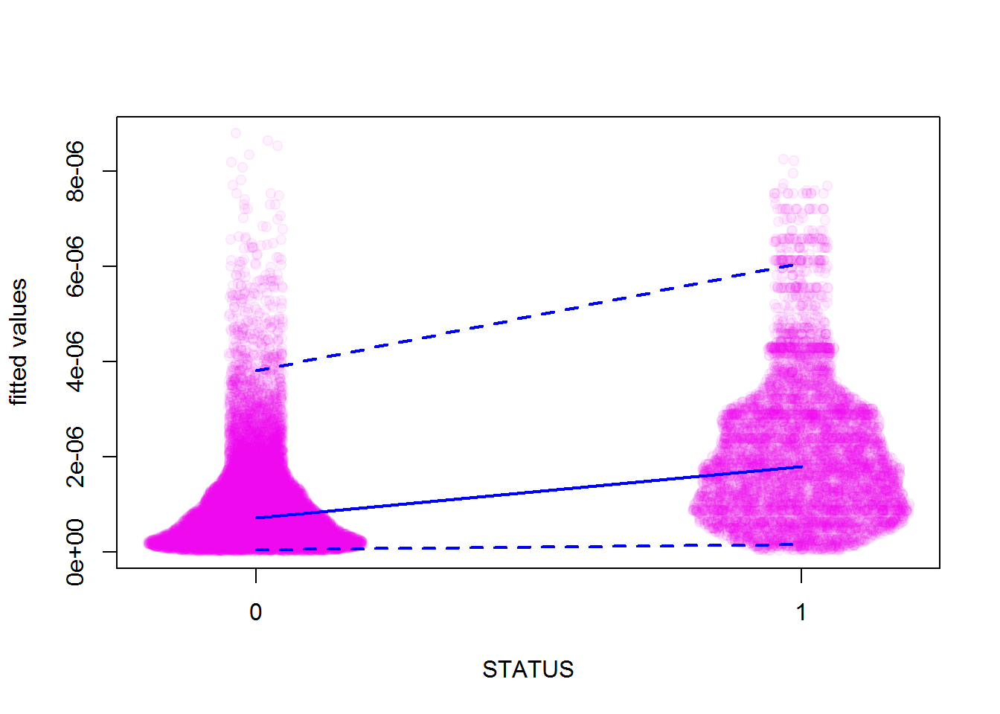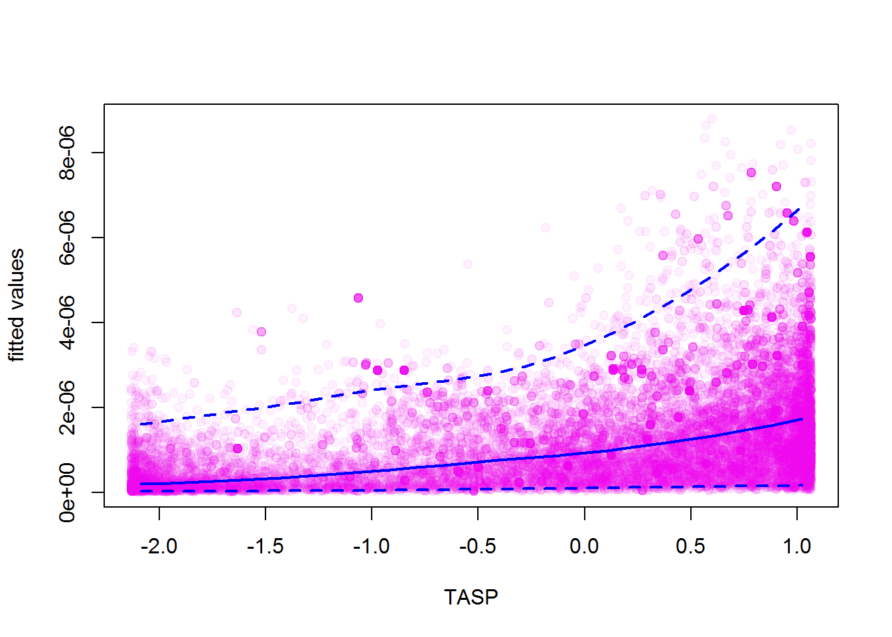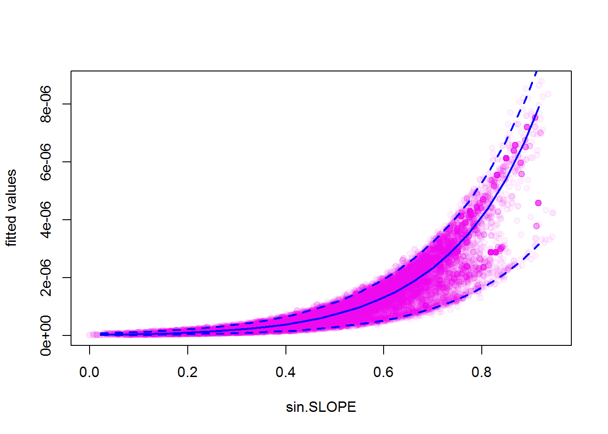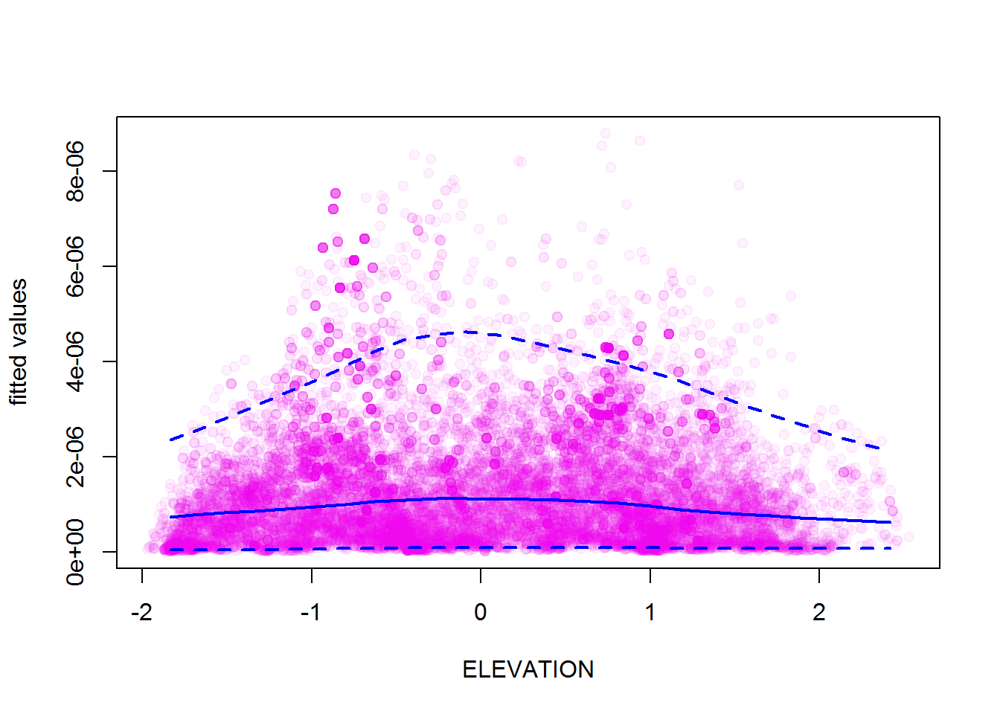
ResourceSelection::kdepairs(m1) # 2D kernel density estimates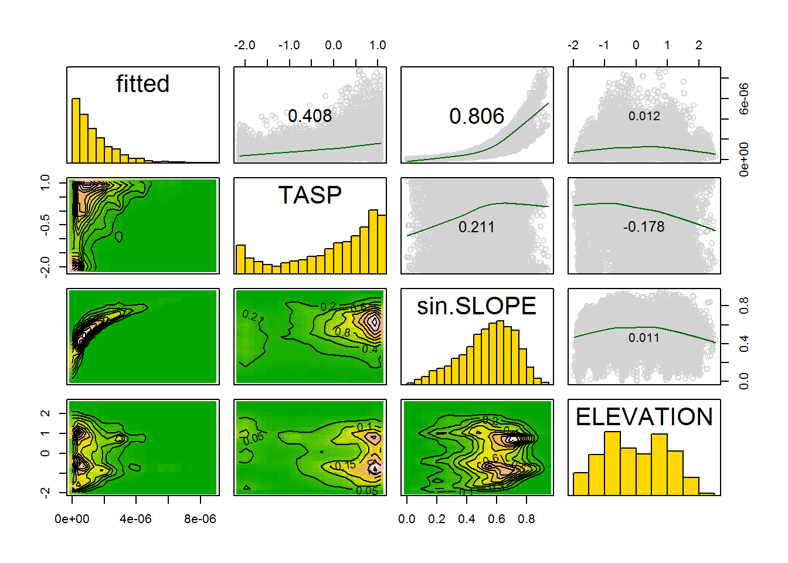
plot(m2)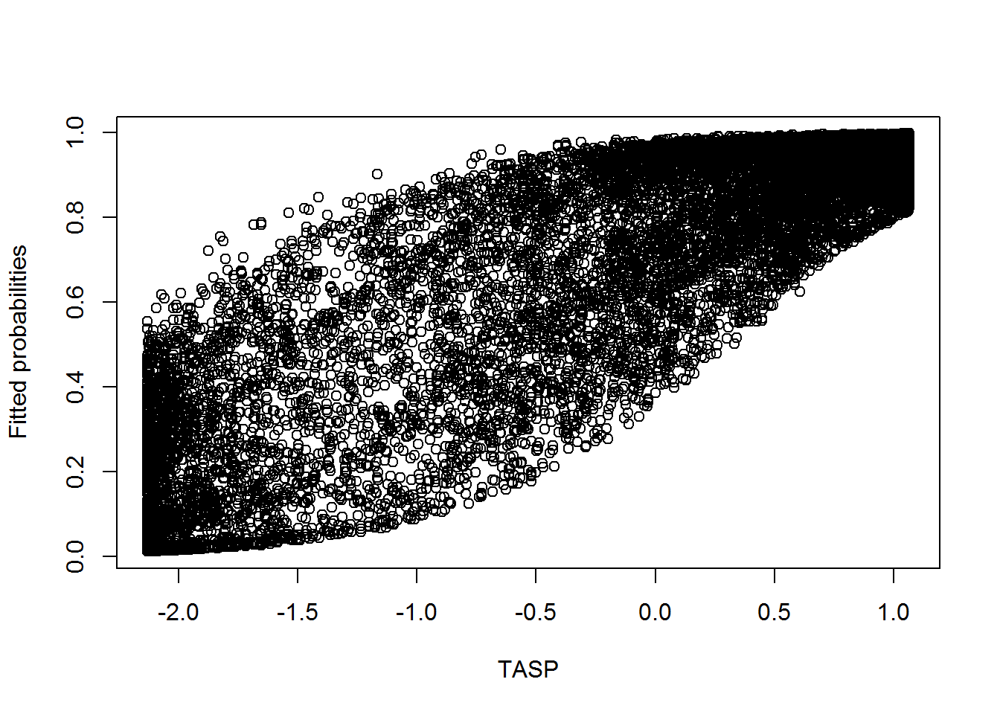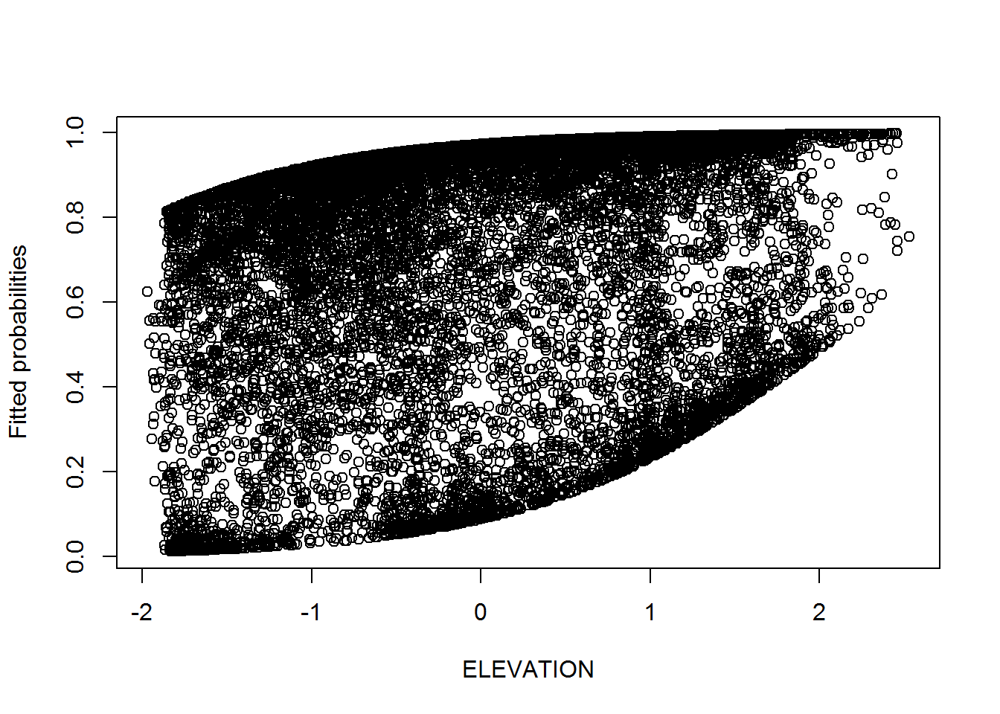
ResourceSelection::kdepairs(m2)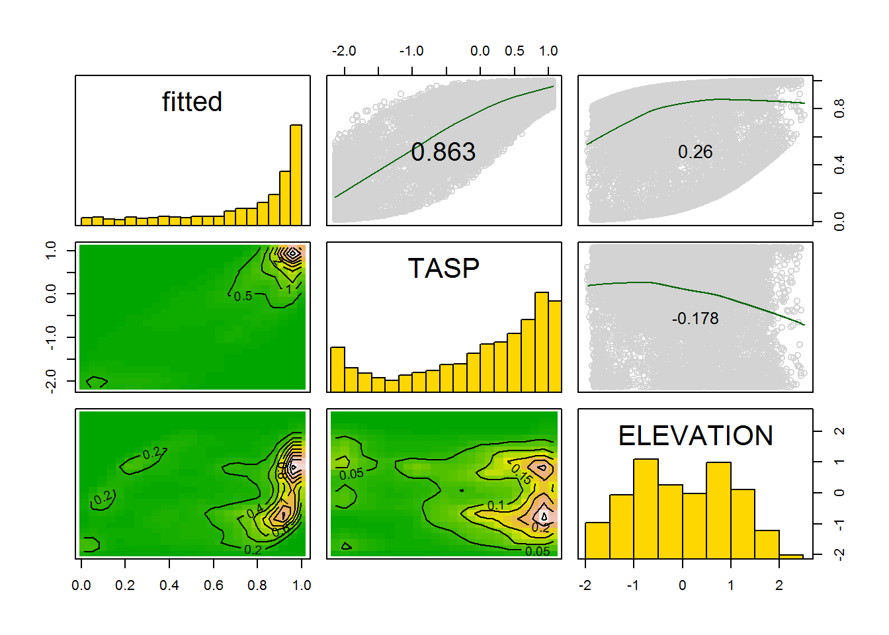
ResourceSelection::mep(m2)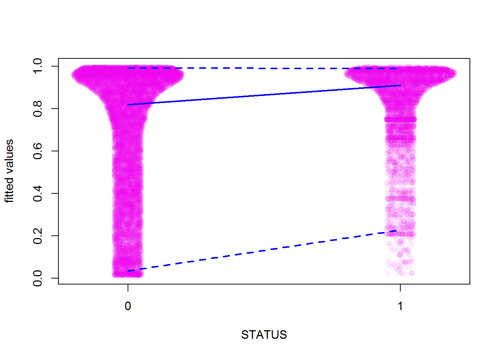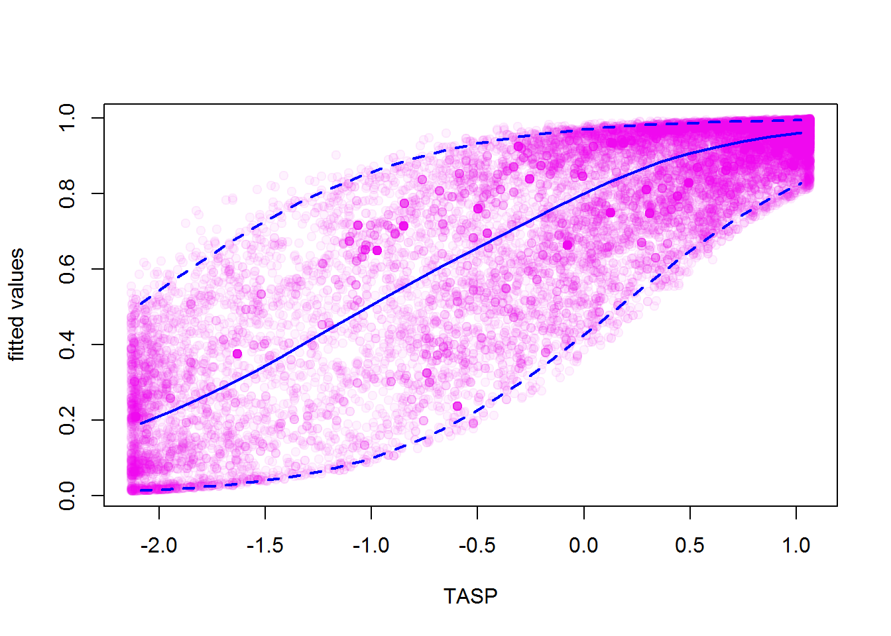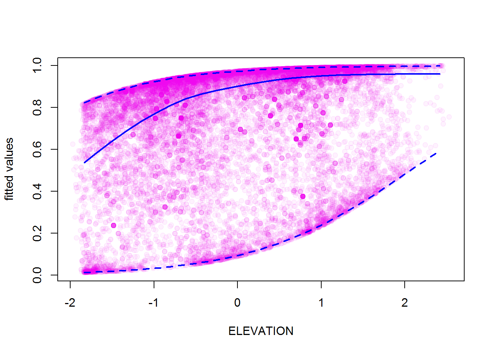
Let’s create our own, using raw telemetry data. This dataset comes from the “amt” package, and contains locations of one red deer in Germany.
library(lubridate, quietly = T)##
## Attaching package: 'lubridate'## The following object is masked from 'package:base':
##
## datelibrary(amt, quietly = T)##
## Attaching package: 'amt'## The following object is masked from 'package:stats':
##
## filterlibrary(raster, quietly = T)## Warning: package 'sp' was built under R version 3.5.1##
## Attaching package: 'sp'## The following object is masked from 'package:amt':
##
## bbox##
## Attaching package: 'raster'## The following object is masked from 'package:amt':
##
## selectdata(deer)
head(deer)## # A tibble: 6 x 4
## x_ y_ t_ burst_
## * <dbl> <dbl> <dttm> <dbl>
## 1 4314068. 3445807. 2008-03-30 00:01:47 1
## 2 4314053. 3445768. 2008-03-30 06:00:54 1
## 3 4314105. 3445859. 2008-03-30 12:01:47 1
## 4 4314044. 3445785. 2008-03-30 18:01:24 1
## 5 4313015. 3445858. 2008-03-31 00:01:23 1
## 6 4312860. 3445857. 2008-03-31 06:01:45 1Each point (n=826) is just a coordinate and time. Let’s plot the raw telemetry data:
plot(deer$x_, deer$y_)
Now we load in our environmental variable (a raster also provided in the amt package). A value of 1 indicates a forest pixel, while 2 indicates a non forest pixel.
data("sh_forest")
(sh_forest)## class : RasterLayer
## dimensions : 720, 751, 540720 (nrow, ncol, ncell)
## resolution : 25, 25 (x, y)
## extent : 4304725, 4323500, 3437725, 3455725 (xmin, xmax, ymin, ymax)
## coord. ref. : +proj=laea +lat_0=52 +lon_0=10 +x_0=4321000 +y_0=3210000 +ellps=GRS80 +towgs84=0,0,0,0,0,0,0 +units=m +no_defs
## data source : in memory
## names : sh.forest
## values : 1, 2 (min, max)plot(sh_forest)
points(deer$x_, deer$y_)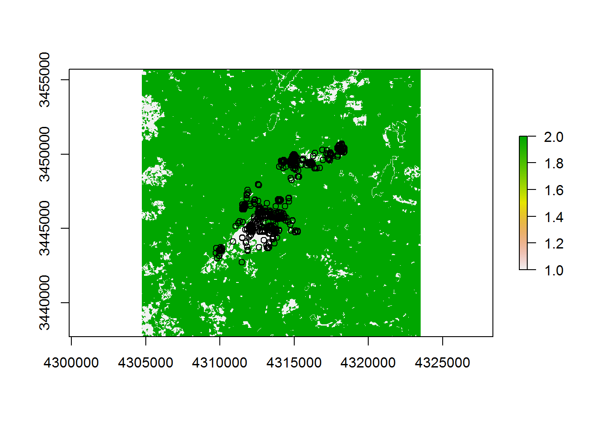
To make it more interesting (and allow the rspf function from ResourceSelection to work), lets make a continuous variable
set.seed(3)
hab <- raster(nrows = sh_forest@nrows, ncol = sh_forest@ncols, ext = sh_forest@extent)
hab <- setValues(hab, rnorm(ncell(hab), mean=15, sd=3))
plot(hab)
points(deer$x_, deer$y_)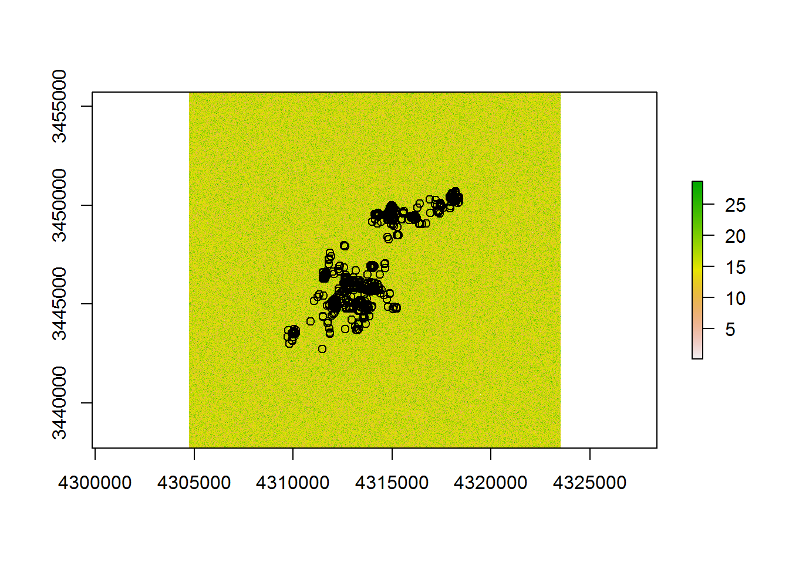
Next we will create a random sampling of the area around where the deer was observed, designating “available” habitat. There are many ways you can go about this (and is an area of considerable debate), but we will simply create random points within the minimum convex hull of the deer locations.
avail <- random_points(deer)
plot(avail$x_, avail$y_)
points(deer$x_, deer$y_, col="red", pch=19)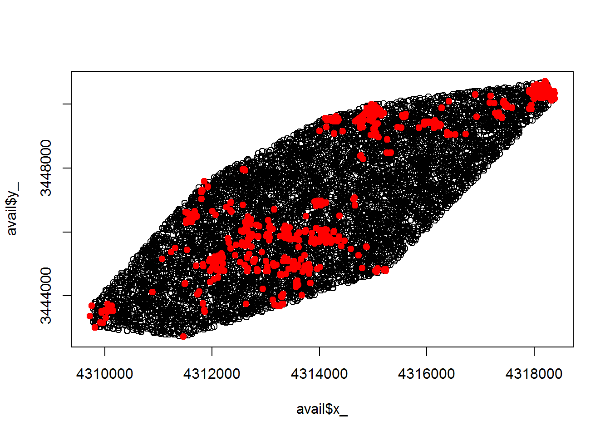 Now let’s extract the habitat values for each point in the deer’s use and the random use
deer <- deer %>% extract_covariates(sh_forest)
avail <- avail %>% extract_covariates(sh_forest)
deer <- deer %>% extract_covariates(hab)
avail <- avail %>% extract_covariates(hab)
deer$use <- 1
avail$use <- 0
deer.c <- plyr::rbind.fill(deer, avail)
deer.c <- deer.c %>%
mutate(forest = factor(sh.forest, levels = 1:2, labels = c("forest", "non-forest")))
head(deer.c)## x_ y_ t_ burst_ sh.forest layer use case_
## 1 4314068 3445807 2008-03-30 00:01:47 1 2 12.03266 1 NA
## 2 4314053 3445768 2008-03-30 06:00:54 1 2 17.93293 1 NA
## 3 4314105 3445859 2008-03-30 12:01:47 1 2 16.10760 1 NA
## 4 4314044 3445785 2008-03-30 18:01:24 1 2 14.93261 1 NA
## 5 4313015 3445858 2008-03-31 00:01:23 1 1 12.03256 1 NA
## 6 4312860 3445857 2008-03-31 06:01:45 1 1 24.36156 1 NA
## forest
## 1 non-forest
## 2 non-forest
## 3 non-forest
## 4 non-forest
## 5 forest
## 6 foresttail(deer.c)## x_ y_ t_ burst_ sh.forest layer use case_ forest
## 9907 4316770 3447792 <NA> NA 2 15.28169 0 FALSE non-forest
## 9908 4316100 3448312 <NA> NA 2 11.64061 0 FALSE non-forest
## 9909 4312481 3446510 <NA> NA 2 14.81225 0 FALSE non-forest
## 9910 4311792 3447221 <NA> NA 2 15.47709 0 FALSE non-forest
## 9911 4311581 3444055 <NA> NA 1 17.33755 0 FALSE forest
## 9912 4315560 3449291 <NA> NA 1 16.04431 0 FALSE forestNow let’s fit the model
deer.rsf <- rspf(use ~ forest + layer, data=deer.c, m=0, B=99)
summary(deer.rsf)##
## Call:
## rspf(formula = use ~ forest + layer, data = deer.c, m = 0, B = 99)
##
## Resource Selection Probability Function (Logistic RSPF) model
## Non-matched Used-Available design
## Maximum Likelihood estimates
## with Nonparametric Bootstrap standard errors (B = 99)
##
## Fitted probabilities:
## Min. 1st Qu. Median Mean 3rd Qu. Max.
## 0.06904 0.07112 0.07169 0.08310 0.07277 0.12747
##
## Coefficients (logit link):
## Estimate Std. Error z value Pr(>|z|)
## (Intercept) -1.907231 4.631085 -0.412 0.680
## forestnon-forest -0.603934 2.854546 -0.212 0.832
## layer -0.003572 0.027191 -0.131 0.895
##
## Log-likelihood: -7504
## BIC = 1.503e+04
##
## Hosmer and Lemeshow goodness of fit (GOF) test:
## X-squared = 15.37, df = 8, p-value 0.0523mep(deer.rsf) # marginal effects similar to plot but with CIs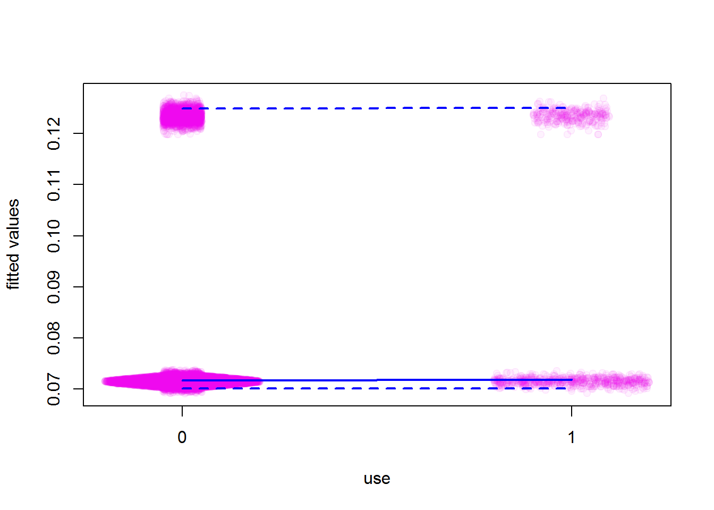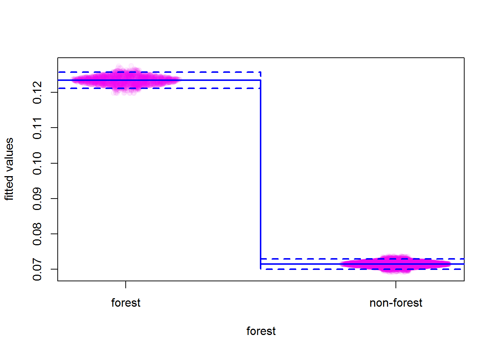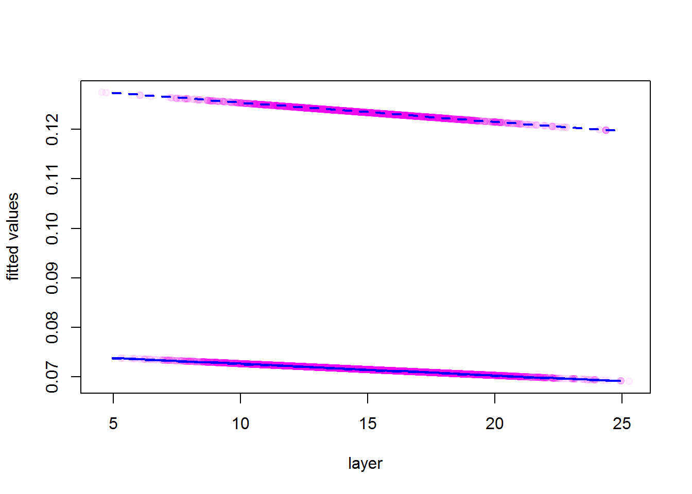
kdepairs(deer.rsf) # 2D kernel density estimates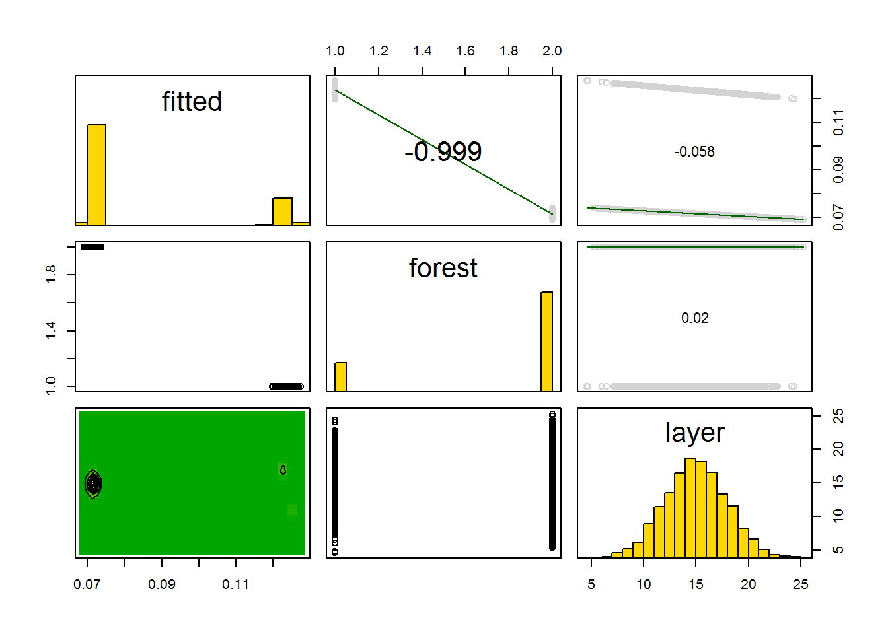
plot(deer.rsf)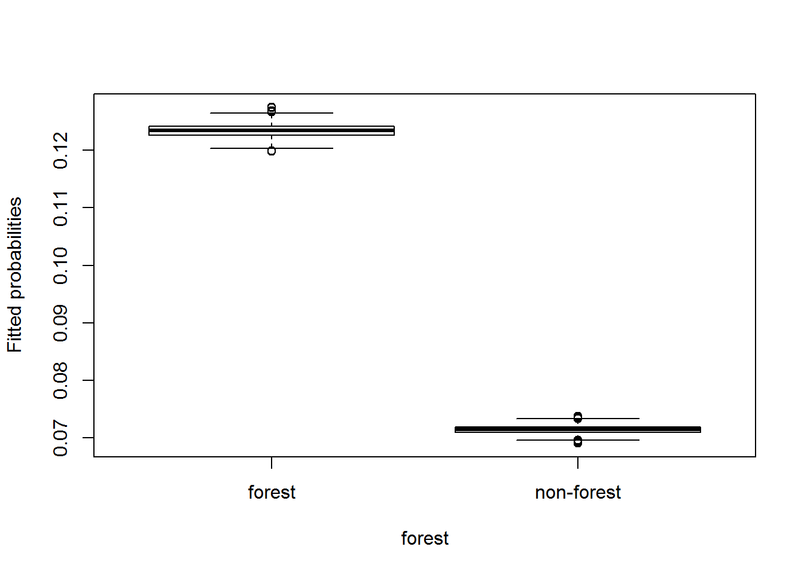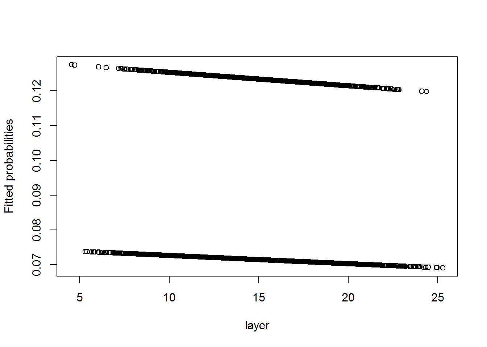